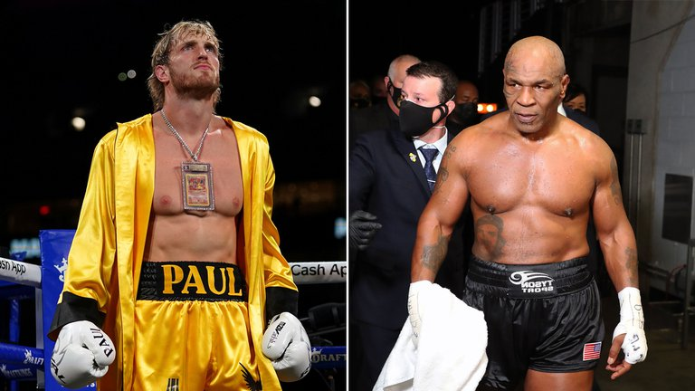

Logan Paul se ilusiona con pelear con Mike Tyson
17 de junio, 2021

“No pueden decirme que no puedo vencerlo”
El youtuber que enfrentó a Floyd Mayweather quiere continuar con su show de exhibiciones de boxeo y su meta es luchar contra el ex campeón mundial de los pesos pesados
Paul, de 26 años, pudo soportar los ocho rounds frente a Money y embolsó USD 14 millones, según informó el periódico británico The Sun. Si bien al terminar el duelo sobre el cuadrilátero adelantó que se tomará unas vacaciones para descansar después de estos agitados meses, ya está pensando en quién será su próximo contrincante. En este contexto el nombre que se asoma es el de Mike Tyson, quien en noviembre de 2020 volvió del retiro para medirse ante Roy Jones Jr. en una pelea de exhibición que terminó en empate. El ex campeón mundial de los pesos pesados tiene 54 años y también está buscando nuevos oponentes para el futuro, por lo que el destino podría encontrarlos sobre el ring.
Leer más